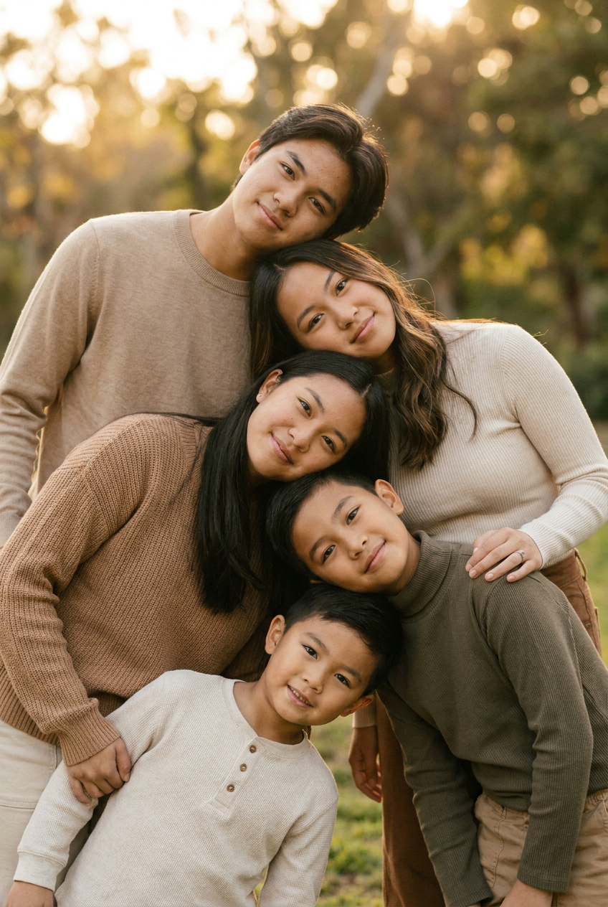
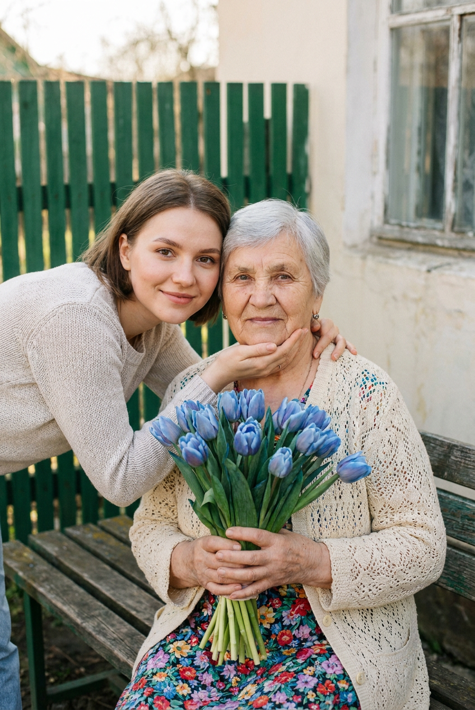
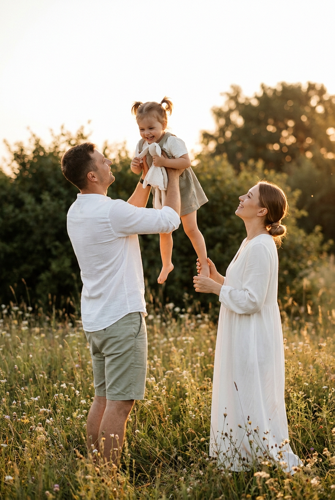
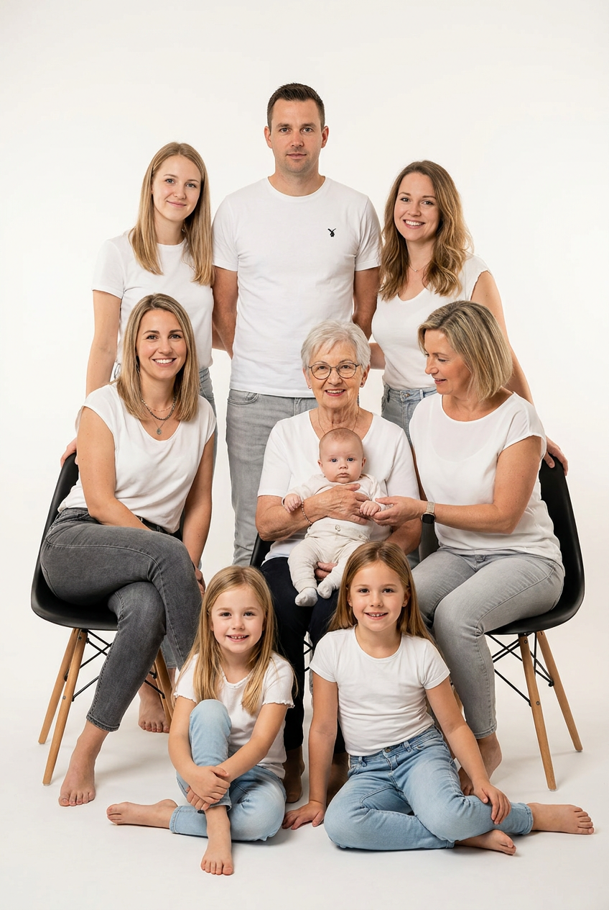
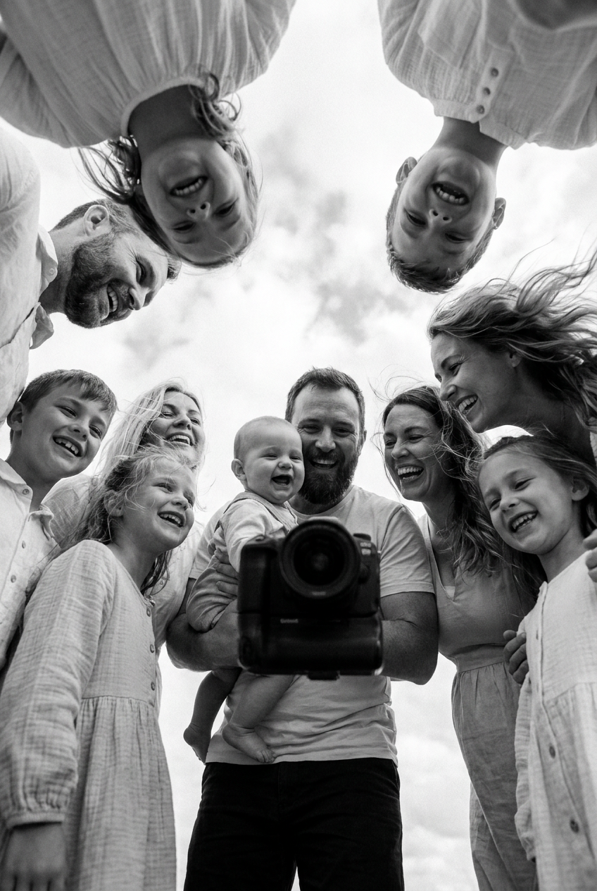
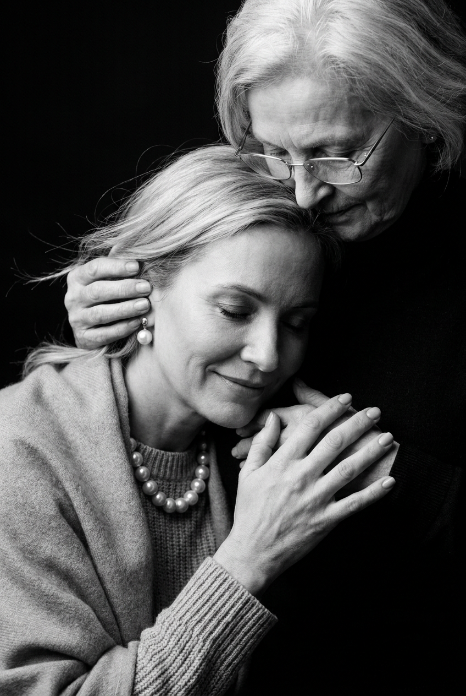
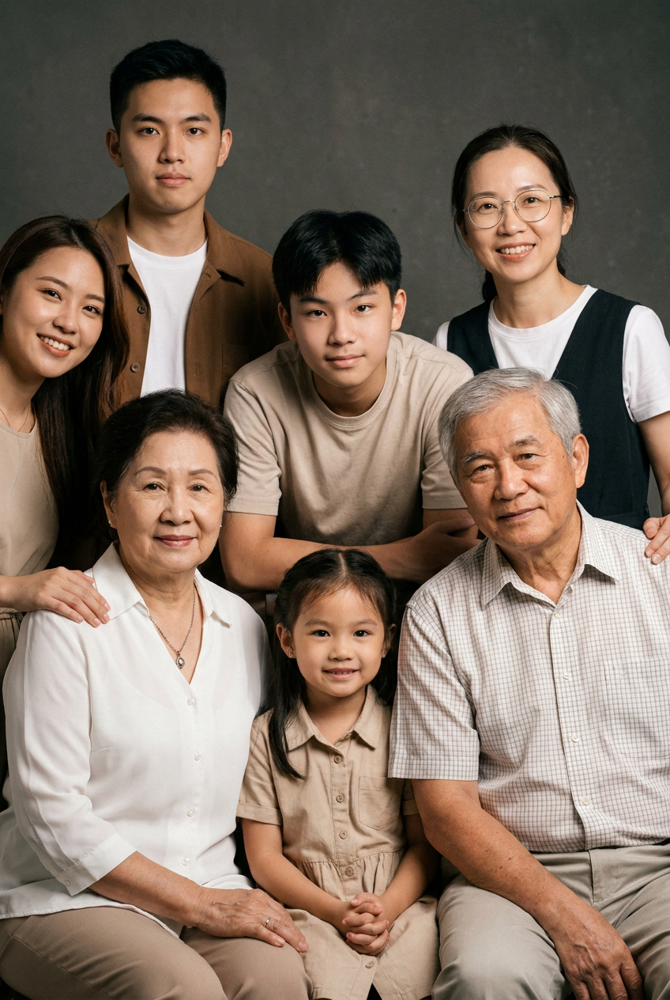
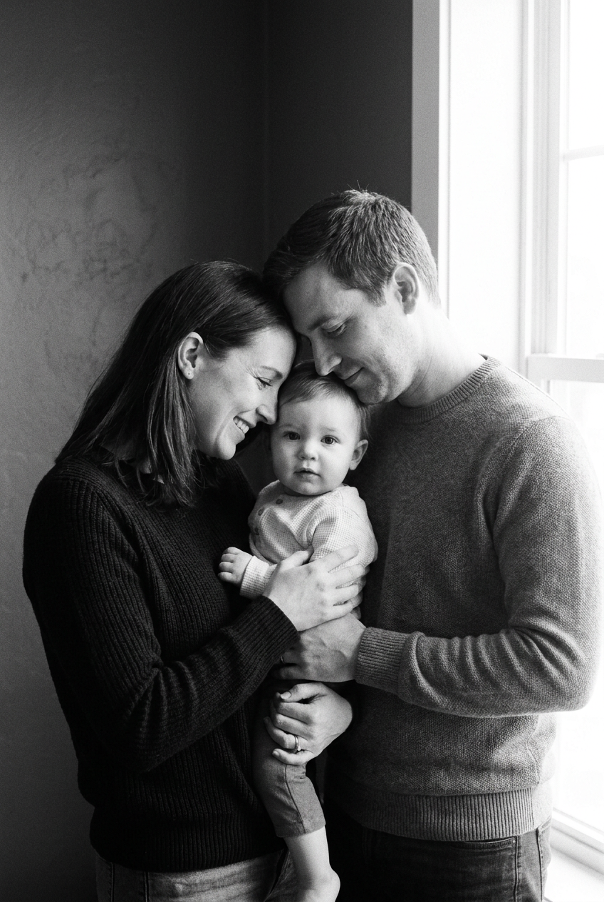
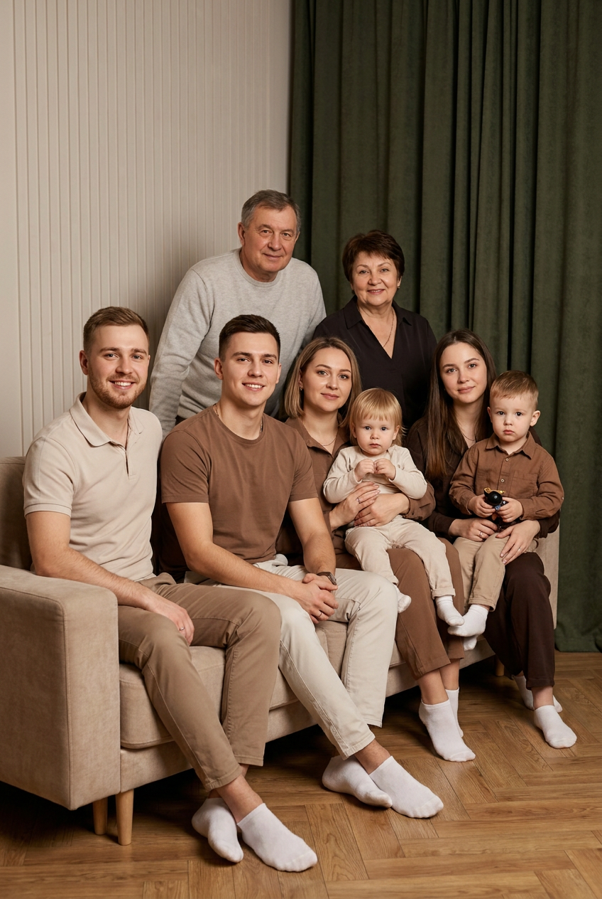
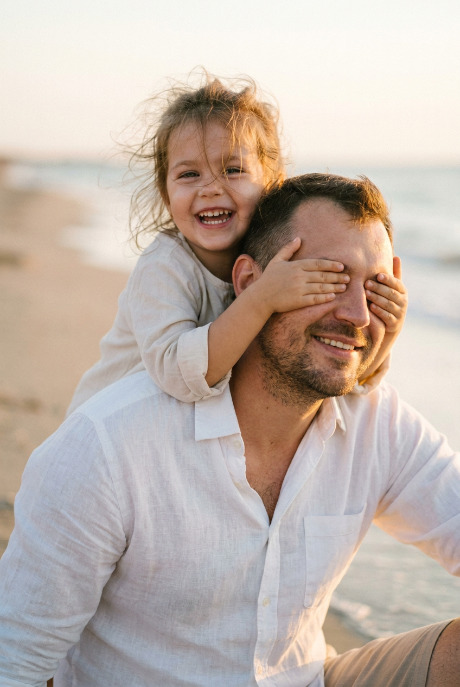

Семейная ИИ-фотосессия: 10 промптов для нейросети

Семейная фотосессия часто упирается в простую проблему: всех сложно собрать в одном месте, поймать живые эмоции и не превратить снимок в скучную постановку. Генерация помогает быстро попробовать разные сюжеты, свет и композиции — от пляжной игры до портрета нескольких поколений.
В подборке — 10 готовых промптов для нейросети: уличные кадры в golden hour, студийные групповые портреты, чёрно-белые сцены, домашние фотографии и трогательные моменты с детьми. Текст можно использовать целиком или адаптировать под свою семью.
Как сгенерировать такое фото: пошагово
Нужен снимок анфас при ровном свете, лицо в кадре целиком, без тёмных очков и головных уборов. Разрешение от 1000 пикселей по короткой стороне. Чем чётче исходник, тем точнее модель повторит черты.
Выберите сценарий ниже и нажмите «Копировать» — текст уйдёт в буфер целиком, вместе с командой сохранения внешности. Эта команда стоит первой строкой и отвечает за то, чтобы на выходе было ваше лицо, а не случайное.
Кнопка «Сгенерировать» рядом с каждым промптом открывает модель в новой вкладке. Nano Banana Pro работает с референсом лица — в отличие от моделей, которые генерируют портрет с нуля и узнаваемость теряют.
Промпт — в поле ввода, портрет — через загрузку референса. Порядок значения не имеет, но без референса команда сохранения внешности работать не будет: модели нечего сохранять.
Для сторис и ленты берите 9:16, для превью и обложек — 4:3. Первый результат редко идеален: если поза или свет ушли не туда, поправьте соответствующую часть промпта и запустите заново. Обычно хватает двух-трёх итераций.
10 промптов для генерации
1. Семья лесенкой
Строго сохранить внешность по загруженному референсу: черты лица, пропорции, мимику и текстуру кожи без изменений. Фотореалистичная вертикальная уличная фотография семьи из пяти человек, выстроенных по возрасту — от старшего к младшему — в необычную композицию «лесенка». Самый взрослый находится выше всех, остальные располагаются ниже ступенями, так что головы и плечи визуально образуют диагональную линию. Каждый человек слегка наклонён в сторону, а направление чередуется: первый влево, следующий вправо, затем снова влево. Люди стоят в трёх зонах кадра — слева, по центру и справа, с ощущением, будто их головы почти лежат друг на друге. Тёплый вечерний golden hour, парк или зелёная улица, мягкие контровые лучи, лёгкая дымка и сильное размытие фона. Никаких вывесок и текста. Реалистичная кожа, умеренный контраст, тёплая плёночная цветокоррекция, деликатное зерно, естественные выражения лиц, вертикальный кадр, объектив 50 мм, высокая детализация.
2. Букет для бабушки

Строго сохранить внешность по загруженному референсу: черты лица, пропорции, мимику и текстуру кожи без изменений. Вертикальный фотореалистичный lifestyle-портрет в тёплом естественном свете. На переднем плане молодая женщина 20–35 лет сидит или стоит рядом с пожилой женщиной у деревянной лавки или низкой опоры. Она мягко улыбается, наклоняется к бабушке и обнимает её левой рукой; другой рукой бережно поддерживает подбородок или шею пожилой женщины, пальцы аккуратно расположены. Взгляд молодой женщины направлен вниз, выражение заботливое и задумчиво-доброе. Бабушка 70–85 лет с короткими серебристыми волосами спокойно смотрит в камеру или чуть в сторону. На ней светло-кремовый ажурный кардиган и яркое платье с мелким цветочным рисунком. В руках она держит большой букет синих тюльпановидных цветов, стебли частично видны и собраны лентой. Естественная кожа, мягкие тени, деликатный боке, тёплая плёночная цветокоррекция, вертикальный кадр, объектив 85 мм.
3. Ребёнок над полем

Строго сохранить внешность по загруженному референсу: черты лица, пропорции, мимику и текстуру кожи без изменений. Фотореалистичная семейная lifestyle-фотография вертикального формата, снятая в тёплом киношном стиле golden hour. Летний или ранний осенний вечер, цветущее поле с густой травой и мелкими цветами на переднем и среднем плане, позади — тёмно-зелёные кусты и деревья в мягком боке. Слева в полный рост стоит мужчина в белой фактурной рубашке из хлопка или льна, светлых песочных либо оливковых шортах и светлой обуви. Он слегка повёрнут вправо, смотрит на ребёнка и поддерживает его снизу — под ноги или талию. Между родителями, чуть выше уровня их плеч, отец поднимает ребёнка на руках. Справа находится женщина в длинном свободном белом платье с рукавами, волосы собраны в низкий хвост или пучок; она улыбается и смотрит на ребёнка. Поза расслабленная, без театральности. Натуральные цвета кожи, мягкий контровой свет, объектив 50 мм, лёгкое плёночное зерно.
4. Семья в белой студии

Строго сохранить внешность по загруженному референсу: черты лица, пропорции, мимику и текстуру кожи без изменений. Фотореалистичный вертикальный студийный портрет большой семьи из восьми человек в современном casual-стиле. Все лица хорошо видны, люди размещены в несколько рядов, пропорции естественные. Фон — ровный бесшовный белый, свет мягкий и рассеянный, без резких теней, цветокоррекция слегка тёплая. Внизу и по краям стоят чёрные стулья или кресла с деревянными деталями, видны их спинки и сиденья. В заднем ряду по центру стоит взрослый мужчина в белой футболке с маленьким чёрным логотипом или рисунком на груди и светло-серых либо оливковых джинсах; голова чуть поднята, взгляд в объектив. Слева за ним — женщина в свободной белой футболке. Остальных членов семьи разместить сидящими и стоящими вокруг, сохранив многоуровневую композицию, спокойные улыбки и живые позы. Минимум деталей, студийный свет, реалистичная текстура ткани и кожи, объектив 50 мм, высокая детализация.
5. Смех вокруг камеры

Строго сохранить внешность по загруженному референсу: черты лица, пропорции, мимику и текстуру кожи без изменений. Фотореалистичная чёрно-белая семейная фотография в вертикальном формате, снятая широкоугольным объективом снизу вверх. Камера находится среди людей примерно на уровне груди или головы, а около девяти членов семьи и друзей окружают её, наклоняясь к объективу. Лица крупные, частично перевёрнуты перспективой, некоторые смотрят прямо вниз в камеру, другие повернуты под небольшим углом. В центре взрослый мужчина держит младенца на уровне груди и лица, надёжно поддерживая ребёнка руками. Рядом — несколько женщин с длинными волосами в светлой одежде и дети, один ребёнок постарше ближе к центру. На лицах радость, удивление и настоящий смех, будто всех застал порыв ветра. Одежда преимущественно белая: рубашки, блузки, светлые футболки. High-key, мягкий свет, выразительные лица, динамичная перспектива, натуральные эмоции, чёрно-белая обработка без лишнего фона, объектив 24 мм, вертикальный кадр.
6. Объятие с бабушкой

Строго сохранить внешность по загруженному референсу: черты лица, пропорции, мимику и текстуру кожи без изменений. Крупный вертикальный чёрно-белый портрет с кинематографичным светом и сильным контрастом. На переднем плане взрослая блондинка с частично развевающимися волосами нежно обнимает пожилую женщину, уткнувшись лицом ей в грудь. Её глаза полуприкрыты или закрыты, на губах мягкая улыбка. На женщине фактурный вязаный свитер, мягкая накидка или плед, а из украшений — нитяное либо крупное жемчужное колье или серьги. Одна её рука поднята и касается руки бабушки, пальцы слегка разведены. Позади и немного выше наклоняется пожилая женщина 60–80 лет с седыми волосами и очками в тонкой оправе. Она обеими руками бережно касается щеки или виска младшей женщины, словно поправляет волосы и успокаивает её. Фон почти чёрный, low-key студийная атмосфера, направленный свет подчёркивает контуры лиц, рук и ткани. Реалистичная кожа, глубокие тени, объектив 85 мм, тонкая плёночная фактура.
7. Поколения в два ряда

Строго сохранить внешность по загруженному референсу: черты лица, пропорции, мимику и текстуру кожи без изменений. Фотореалистичный вертикальный студийный портрет семьи из восьми человек, размещённых в два уровня — стоящие сзади и сидящие впереди. Тёплые приглушённые тона, мягкий рассеянный свет без жёстких теней, натуральная кожа и спокойные улыбки. На заднем плане слева стоит молодой парень или подросток в коричневой рубашке либо куртке поверх белой футболки, он прямо смотрит в камеру. В центре молодой человек или подросток слегка наклонён вперёд, выражение спокойное. Справа сзади улыбается женщина в очках с тонкой оправой, на ней тёмный жилет или платье поверх белой футболки. Перед ней, ближе к камере, частично видна молодая девушка, повернутая к объективу с тёплой улыбкой. Внизу слева сидит пожилая женщина в белой блузе с аккуратной цепочкой, её руки лежат на коленях. Остальные члены семьи сидят рядом, образуя плотную, но естественную композицию. Все лица открыты, одежда спокойных оттенков, объектив 50 мм, высокая детализация.
8. Треугольник родителей

Строго сохранить внешность по загруженному референсу: черты лица, пропорции, мимику и текстуру кожи без изменений. Фотореалистичная чёрно-белая семейная фотография в вертикальном формате, candid moment. В помещении три человека образуют компактный треугольник между тёмной нейтральной стеной слева и светлым дверным или оконным проёмом справа. Мать находится ближе к камере слева и показана в профиль. Отец стоит справа, немного глубже, в профиль или полупрофиль. Между ними расположен ребёнок, его голова находится примерно на одной линии с лицами родителей. Семья смотрит друг на друга с тихой нежностью, без нарочитых улыбок. Мягкий рассеянный свет входит справа и подсвечивает контуры лиц, фон остаётся простым, без мебели, текста и логотипов. Средний план — примерно до колен или по пояс взрослых, камера на уровне груди, без широкоугольных искажений. Чёрно-белая обработка с тёплой мягкостью, натуральные эмоции, лёгкое плёночное зерно, объектив 50 мм, реалистичная тональность кожи.
9. Восемь человек на диване

Строго сохранить внешность по загруженному референсу: черты лица, пропорции, мимику и текстуру кожи без изменений. Фотореалистичный вертикальный семейный портрет в уютной гостиной: восемь человек собрались на большом матовом бежевом диване. Свет тёплый и мягкий, выражения лиц естественные, без чрезмерно постановочных улыбок. Справа в кадре находится плотная тёмно-зелёная штора, слева — светлая бежево-молочная стена с вертикальной фактурной панелью. Внизу виден тёплый деревянный паркет. На диване лежат небольшие подушки или ткань в тон обивки. На переднем левом плане сидит молодой мужчина с лёгкой щетиной или аккуратной бородой, в светло-бежевой либо молочной рубашке с коротким рукавом или футболке-поло; он слегка улыбается. Остальные члены семьи размещены рядом и в верхнем ряду за спинкой дивана, лица не перекрывают друг друга, позы расслабленные. Чистый спокойный фон, реалистичные ткани, мягкий студийный свет, объектив 50 мм, вертикальная композиция, высокая детализация.
10. Игра у воды

Строго сохранить внешность по загруженному референсу: черты лица, пропорции, мимику и текстуру кожи без изменений. Фотореалистичная вертикальная фотография в стиле lifestyle и cinematic на песчаном пляже у линии воды. На переднем плане мужчина 30–40 лет с лёгкой щетиной и тёплой улыбкой сидит или стоит низко относительно камеры. На нём светлая рубашка с открытым воротом, заметна фактура хлопковой ткани. Корпус слегка развёрнут вправо, взгляд направлен к камере или вниз. На спине у мужчины устроилась маленькая девочка примерно 3–6 лет. Её волосы растрёпаны ветром, отдельные пряди развеваются, создавая естественный хаос. Девочка широко улыбается, глаза открыты и смотрят в объектив, выражение игривое. Она подняла руки и ладонями закрывает мужчине глаза в игре «угадай, кто». На ребёнке светлая молочная или белая одежда — мягкая рубашка либо платье с воротником и пуговицами, или свободный верх без ярких принтов. Мягкий вечерний свет, натуральные цвета, ветер, песок и вода в фоне, умеренное боке, объектив 50 мм, высокая детализация.
Что важно учесть в этом стиле
Семейный кадр лучше работает, когда в нём есть понятная связь между людьми: взгляд, объятие, поддержка ребёнка или общий жест. Просто перечислить участников недостаточно — задайте каждому место, направление тела и действие. Для групп из пяти человек и больше отдельно описывайте передний, средний и задний план.
Фотореализм сильно зависит от света и камеры. Для портрета подойдут 50–85 мм, для необычного кадра вокруг объектива — 24 мм. Указывайте вертикальный формат, отсутствие текста на фоне, естественную кожу и запрет на лишние пальцы, дублирующиеся лица и перекрытые глаза.
Идеи для вариаций
- Замените парк на дачный сад, осеннюю набережную или заснеженный двор.
- Сделайте семейную одежду в одной палитре: молочной, терракотовой, синей или оливковой.
- Добавьте общий предмет — старый альбом, плед, корзину с яблоками или букет.
- Попросите нейросеть показать тот же сюжет в формате полароида, журнальной съёмки или домашнего фото.
- Измените настроение: тихая нежность, громкий смех, прогулка после дождя или торжественный юбилей.
Как собрать свой промпт
Начните с технической основы: вертикальный или горизонтальный кадр, фотореализм, тип плана, объектив и характер света. Затем опишите локацию и расставьте людей по слоям. Для каждого участника укажите возраст, одежду, позу, направление взгляда и действие — так модель реже смешивает роли.
В конце добавьте ограничения: чистый фон без надписей, естественные пропорции, пять пальцев на каждой руке, отсутствие лишних людей и артефактов. Если результат почти удачный, не переписывайте весь текст: меняйте одну переменную за раз и сохраняйте удачную версию. Обычно для сложной групповой сцены нужно 5–15 попыток.
Ошибки, из-за которых кадр не получается
- Слишком много людей без расстановки. Нейросеть смешивает лица и конечности, если не разделить участников на ряды и зоны.
- Противоречивый свет. Не сочетайте одновременно жёсткий полуденный солнцепёк и мягкий студийный рассеянный свет.
- Нечёткие действия. Формулировка «семья общается» слабее, чем «мужчина держит ребёнка под ногами, а женщина смотрит на него».
- Слишком широкий объектив. Для группового портрета 24 мм может растянуть лица по краям; используйте 35–50 мм, если не нужен эффект снизу вверх.
- Отсутствие запретов. Добавьте отсутствие текста, логотипов, лишних пальцев, дубликатов людей и случайных предметов.
Частые вопросы
Как сделать такое ИИ-фото бесплатно?
Попробуйте Kandinsky, Шедеврум, Krea AI или Arena.ai: у них есть бесплатный доступ или ограниченное число генераций, но условия меняются. Для семейных сцен бесплатного режима часто хватает на тесты, однако сложные группы могут потребовать много попыток. Референс поддерживают не все режимы: где-то можно загрузить изображение, а где-то доступно только текстовое описание. Не загружайте фотографии детей и родственников без их согласия и проверяйте правила обработки изображений.
Как сохранить похожие лица у всех членов семьи?
Используйте референсы, если выбранный режим их принимает, и загружайте отдельные качественные фотографии без сильных теней. Описывайте родство и возраст, но не перегружайте промпт мелкими чертами. Для группы лучше сначала получить удачную композицию, а затем отдельно исправлять лица и руки.
Почему нейросеть путает руки и детей?
Сложные жесты, объятия и перекрывающиеся фигуры относятся к самым трудным сценам. Упростите позу, опишите, какая рука где находится, и попросите показать ладони и пальцы естественно. Помогает генерация поэтапно: сначала общий кадр, затем исправление проблемной области через режим редактирования.
Какой формат выбрать для семейной фотосессии?
Для публикации в сторис, обложки и портрета подойдёт вертикальный формат 4:5 или 9:16. Для большой группы лучше оставить больше воздуха по бокам и выбрать 4:5. Если генератор не принимает соотношение сторон в промпте, задайте его в настройках перед созданием изображения.